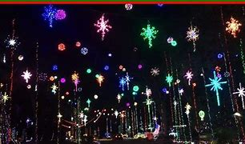

Events are generally a great way to know other people and helps you make friends which in turn helps reduce the stress level for both you and the people you come in contact with. It is also a distaction to your usual, boring routine that could be inducing extra stress in your life and instead gets you out of your comfort zone and also build valuable contacts with others.

1.General community events 2. Holiday events 3. Religious events 4. Trying different event venues during the weekend 5. County fairs 6. Season specific festivals 7. Music events 8. Sports events 9. Film screening events ... and for more ideas, check local websites. Ideas of potential events that could be found anywhere